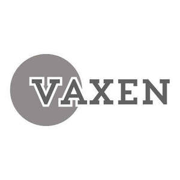

Trade Mark Journal No.2025/011 14 March 2025
UK00004167936 3 March 2025 (1,3,5,30,35)
Mark 1

Mark 2
Vaxen
- Class 1
- Chemical substances, chemical materials, and chemical preparations; chemicals for use in industry, science, agriculture, and horticulture; fertilizers, soil conditioners, and plant growth regulating preparations; water treatment chemicals and water-purifying chemicals; industrial chemicals, including citric acid, sodium hydroxide, glycerin, sodium bicarbonate, soda ash, bentonite, caustic alkali, borax, and other chemical substances for industrial purposes; chemical compositions for use in the manufacture of cleaning preparations, cosmetics, food products, gardening solutions, automotive care products, and textiles; adhesives for use in industry; industrial minerals; antifreeze and coolants for vehicle engines; desiccants and preserving agents; salts and salts for fertilizers; nitrogenous fertilizers, phosphates, and potash; activated carbon and charcoal; alcohol for industrial purposes; epoxy resins, unprocessed; spirits of vinegar (dilute acetic acid); ingredients for the food industry; chemicals and active chemical ingredients for the manufacture of cosmetics; and other chemical substances and preparations for industrial, agricultural, commercial, and consumer applications.
- Class 3
- Cleaning preparations, detergents, and degreasers for use in the home and other environments; cosmetic chemicals, preparations, and active ingredients for personal care, including glycerin, essential oils, and oils for cosmetic and cleaning purposes; non-medicated soaps, soap bases, and soda lye; bleaching preparations and substances for laundry and household purposes; polishing, scouring, and abrasive preparations for surfaces and textiles, including abrasives; stain removers, color-removing preparations, and fabric softeners for laundry use; deodorants and air-freshening preparations for household and personal care; essential oils for cosmetic, perfumery, and cleaning purposes; preparations for unblocking drains and removing limescale; skin care preparations, pomades, and balms for cosmetic purposes, including balms; laundry preparations, including starch, laundry glaze, and laundry soaking preparations; chemical cleaning preparations and scented cleaning agents for household use; color-brightening chemicals for household purposes; washing-up liquids / dish soaps and bath preparations; and other non-medicated grooming, cleaning, and cosmetic preparations for consumer, professional, and pet/animal applications.
- Class 5
- Pharmaceutical preparations and disinfectants for use in the home and other environments; pesticides, herbicides, fungicides, and biocides for agricultural, horticultural, and household use; sanitizing preparations for household, commercial, and personal care applications; chemical preparations for water purification and treatment; insect repellents, preparations for destroying flies, mice, and vermin, and fly glue / fly catching adhesives; medicinal herbs, menthol, and absorbent cotton / absorbent wadding for medical and veterinary purposes; therapeutic preparations and salts for the bath; bandages for dressings, adhesive plasters / sticking plasters, and first-aid boxes filled; remedies for foot perspiration, perspiration, and corn remedies; deodorants other than for human beings or for animals, deodorizers for litter trays, and aromatic deodorizers for toilets; nutritional supplements and dietary supplements for human beings and animals; chemical preparations for veterinary purposes; and other medicinal, sanitary, and pest control preparations for consumer, professional, agricultural, and pet/animal applications.
- Class 30
- Staple foods and food ingredients for culinary and industrial use; flour, including wheat flour, soy flour, maize flour, potato flour, and buckwheat flour; baking soda (bicarbonate of soda for cooking purposes), cooking salt, and salt for preserving foodstuffs; spices, seasonings, and herbs, including cinnamon, curry, saffron, and garden herbs (preserved seasonings); pasta, noodles, rice, and semolina; sugars, including palm sugar, crystallized rock sugar, and artificial sweeteners for culinary purposes; cocoa, coffee, tea, and chocolate for food; honey, malt extract, and molasses for food; vinegar, vanillin (vanilla substitute), and soy sauce; thickening agents, binding agents, and leavening agents for cooking foodstuffs; flavorings for cakes, food, and beverages, other than essential oils; edible paper, edible rice paper, and processed seeds used as seasonings; cake powder, baking powder, and powders for making ice cream; crushed oats, oat flakes, oatmeal, and couscous; and other food preparations, condiments, and culinary ingredients for consumer and professional applications.
- Class 35
- Advertising, business management, and retail services; online retail store services and wholesale services featuring bulk chemicals, consumables, and household goods, including chemical substances, chemical materials, and chemical preparations for industry, science, agriculture, and consumer use; industrial minerals, adhesives for use in industry, and chemical compositions and materials for the manufacture of cleaning preparations, cosmetics, food products, gardening solutions, automotive care products, and textiles; business administration for e-commerce platforms; wholesale and retail distribution of cleaning, cosmetic, gardening, automotive, and food-related products; and other promotional and commercial services to support the sale and distribution of bulk and value-driven products for consumer and professional markets.
Eos Cosmetics Ltd